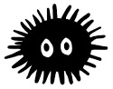

- Non-binary trans person (he/they pronouns)
- Argentinian
- Socially awkward
- Takes care of plants
- Always wants to play boardgames but hardly ever does so
- Has a lot of books that didn't read
- Likes lists (obviously)
- Hates passive-agressive comunication
- Perfect date is sharing silence with a friend